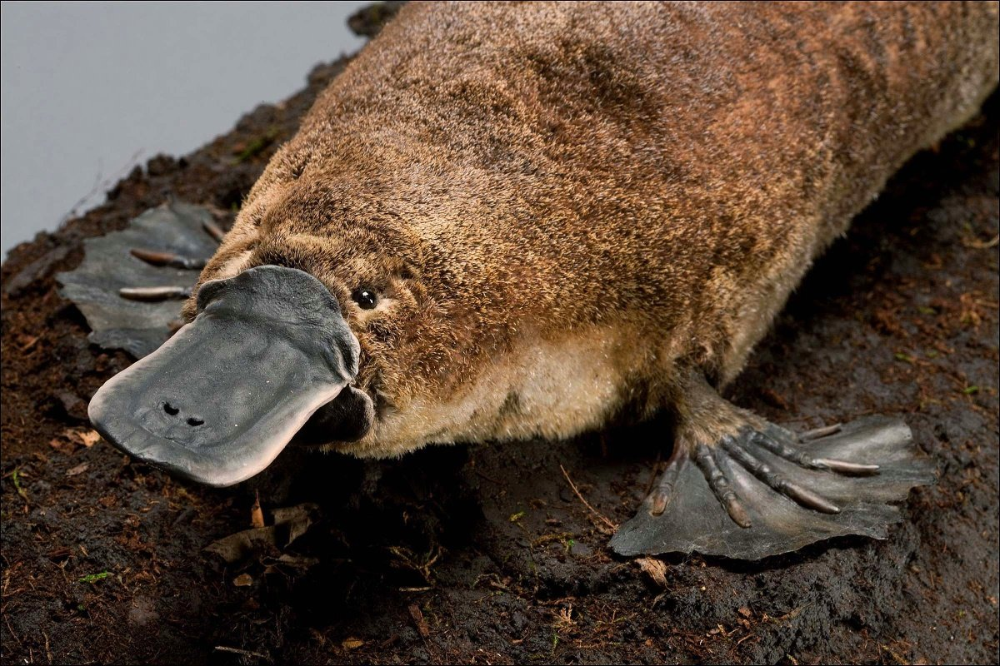

Когда в Австралии учёные обнаружили утконоса, сам факт его существования нанёс теории эволюции смертельный удар: такое необычное во всех смыслах существо однозначно сотворить мог лишь Господь Бог.
Нос этого удивительного зверька удивительно сильно напоминал клюв утки (откуда и пошло название), на каждой ступне он имел по пять, соединённых перепонками пальцев. Лапы создания, как у рептилии, оказались расположены по бокам, а на задних лапках, как у петуха, были обнаружены шпоры.
Хвост зверька мало чем отличался от хвоста бобра, а ещё оказалось, что он несёт яйца и способен отравить противника собственным ядом! И это далеко не полный перечень удивительных особенностей животного, которое является неофициальным символом австралийского континента и изображен на двадцатицентовой монете.
